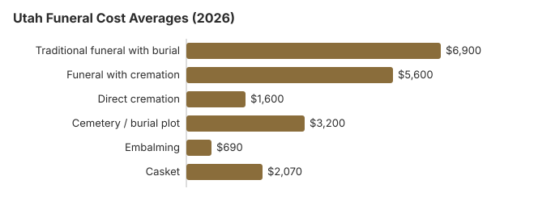

Funeral Costs in Utah: What Families Pay in 2026
Utah buries more than most states: only 42% of deaths end in cremation, against 63.4% nationally. A traditional Utah funeral with burial averages about $6,900 on our 2026 estimate, 17% under the $8,300 national median, with direct cremation from about $1,600 and a plot near $3,200. Utah also raised its death certificate fee to $35 on July 1, 2026. The rest of this page itemizes the costs and covers county help for unclaimed bodies and the two veterans cemeteries.
Utah Funeral Costs by Line
Below are our Utah estimates. The Department of Commerce licenses Utah funeral homes but leaves pricing to them.
| Item | Utah average | Low-high |
|---|---|---|
| Traditional funeral with burial | $6,900 | $5,175 – $8,970 |
| Funeral with cremation | $5,600 | $4,480 – $7,280 |
| Direct cremation | $1,600 | $1,120 – $2,240 |
| Cemetery / burial plot | $3,200 | $1,600 – $6,400 |
| Embalming | $690 | $500 – $1,500 |
| Casket | $2,070 | $690 – $5,520 |
Our Utah estimates: modeled for the whole state rather than surveyed from Utah funeral homes, and not a quote or professional advice. The method page shows how they are built; limits are spelled out in our disclaimer.
State sources: Utah Board of Funeral Service; Utah Code §§ 26B-8-225, 17-53-221; Utah Code 58-9-610; 58-9-616.

Utah Buyers' Rights
Funeral Rule complaints go to the FTC at ftc.gov; the Funeral Consumers Alliance advises families for free, and the Utah board takes state complaints at 801-530-6621.
Why Utah Quotes Vary
Mountain-state funerals usually come in under the $8,300 US median, and Utah's do. Within Utah the spread comes from local costs, how many homes compete, state paperwork and building costs; Salt Lake County quotes can differ from rural ones by 10-30%.
At 42%, Utah's cremation rate is 21.4 points below the 63.4% national rate that NFDA projected for 2025. Direct cremation providers tend to post flat rates; in Utah the table puts that rate near $1,600.
Utah Costs by City
Salt Lake City, Provo, St. George and Ogden each have their own price levels. City estimates:
Utah Cremation and Burial Guides
Utah's cremation and burial pages:
Cremation Costs in Utah
Fewer Utah families cremate (42%), but prices are low: direct cremation from about $1,600 and a service from $5,600, plus urns, scattering rules and memorial ideas.
Burial Costs in Utah
The burial most Utah families choose: plots from $3,200, then casket, vault, headstone and opening fees, $15,550-$20,050 in all.
Cheaper Utah Options
| Option | Utah cost | Includes |
|---|---|---|
| Direct cremation | $1,600 | Cremation with no viewing or service; Utah needs a permit but sets no fixed wait (Utah Code 58-9-610, 26B-8-230). |
| Direct burial | $3,450 | Quick burial without embalming or a viewing; the Utah cemetery charges plot and opening fees separately. |
| Green burial | $3,795 | A biodegradable shroud or container with no embalming, where a Utah cemetery allows it. |
| Cremation + memorial | $5,600 | Cremation, then a memorial on another day |
| Traditional funeral | $6,900 | Viewing, service and graveside burial |
Finding Price Lists Across Utah
Outside the Wasatch Front, Utah has few funeral homes per person. That limits choice, but it also means many rural homes live on their local reputation. Salt Lake City has the most homes close together; elsewhere, collecting two or three price lists can mean calling across county lines. Do it anyway: Utah prices spread much wider than the $6,900 statewide average suggests.
Utah Fees to Watch
A first Utah quote often leaves things out. Ask about these:
- Embalming billed as required, which Utah law almost never demands.
- Cemetery "perpetual care" fees: An ongoing maintenance charge, typically $200–$1,000, added on top of the $3,200 Utah plot price.
- Documentation and filing fees: Utah death certificates, the disposition permit, and filing fees can add $200–$600.
Utah Funeral Payment Help
- Social Security's $255: paid once, to an eligible Utah spouse or child who claims it within two years (1-800-772-1213).
- VA Form 21P-530EZ lets whoever paid a Utah veteran's funeral claim up to $1,032 for burial and $1,032 for a plot when a death not connected to service falls on or after October 1, 2026 (see our veteran burial benefits guide).
Educational Resources
- Funeral Consumers AllianceIndependent nonprofit consumer advocacy for funeral rights
- FTC Funeral RuleThe federal rule protecting funeral consumers
- Funeral Insurance GuideCompare final expense and burial insurance options
- Best Burial Insurance CompaniesSide-by-side comparison of top burial insurance providers
- Payment Assistance GuideGovernment programs and financial help for funeral costs
- Insurance Plan ComparisonCompare coverage, premiums, and payout speed across providers
Compare Funeral Costs
- Average Funeral Cost in 2026National cost breakdown with real prices
- Cremation vs. Burial Cost ComparisonSide-by-side price comparison to help you decide
- Funeral Cost BreakdownEvery line item explained: know what you're paying for
- Cheapest Funeral OptionsLower-cost alternatives, with typical price ranges
- Direct Cremation: Most Affordable OptionNFDA 2023 median $2,645 with a family-supplied container (latest available)
- How to Compare Funeral PricesStep-by-step guide to getting the best price
Utah Cremation Next to Burial
Cremation
- Direct cremation about $1,600
- Cremation with service about $5,600
- No grave to buy
- Memorial date is flexible
- 42% of Utah deaths
Traditional Burial
- Traditional funeral about $6,900
- Utah plot about $3,200
- Cemeteries usually require an outer container
- A grave the family can return to
- Metal casket near $2,500 at the national median (NFDA 2023 General Price List Study); Utah sellers differ
Planning a Utah Funeral
Utah families arranging a first funeral tend to rush. Go in this order:
- Choose burial or cremation: cremation in Utah or burial in Utah.
- Explore payment assistance if cost is a concern: Social Security benefits, veteran benefits, Medicaid assistance, or crowdfunding; in Utah, also ask the county indigent burial program (such as Salt Lake County Vital Records).
Utah death certificates: $35 first copy from July 2026
Utah's Office of Vital Records and Statistics raised its fees on July 1, 2026. A certified death certificate now costs $35 for the first copy, up from $30, and $10 for each additional copy of the same record ordered at the same time, so a family that orders five at once pays $75 (Utah Vital Records fee schedule; checked October 29, 2026). Ordering extra copies later costs $35 each again, so order enough at the start.
- Faster service: expedited processing adds $25 and expedited shipping $30.
- Permits on the same schedule: a cremation permit is $150 and a burial transit permit $7. The funeral home usually passes these through as cash advances, so look for them on the statement.
- Older records: Utah death records go back to 1905.
Utah's board, county burials and veterans cemeteries
Utah funeral homes are licensed through the Division of Professional Licensing by the Utah Board of Funeral Service. The number for price-list problems or high-pressure sales is 801-530-6621.
Utah is not one of the nine states the Funeral Consumers Alliance lists as requiring a funeral director for parts of after-death care. Utah families may handle many steps without a funeral home, but someone still has to file the death certificate and get the disposition permit.
No waiting period is set before a Utah cremation, but the permit comes first (Utah Code 58-9-610, 26B-8-230).
Unclaimed and indigent deaths
A Utah county must give an unclaimed body found within it a decent burial at county expense unless the University of Utah School of Medicine asks for it (Utah Code § 26B-8-225), and counties may pay to cremate indigent people (§ 17-53-221). Salt Lake County, for one, runs its own indigent program. (Source: Utah Code §§ 26B-8-225, 17-53-221.) Social Security's $255 is claimed by a qualifying spouse or child within two years and never to the Utah funeral home.
Veterans cemeteries in Utah
To use Southern Utah National Cemetery (435-267-2710), the funeral home calls the VA's National Cemetery Scheduling Office at 800-535-1117. Utah Veterans Cemetery and Memorial Park, run by the state (801-254-9036), takes requests itself.
Utah steps
- Ask Utah homes for itemized prices, by phone or in person, and choose only the items you need.
- Check with the Utah home whether your plans really need embalming.
- Before arranging anything for someone with no means, call the county's indigent program, such as Salt Lake County Vital Records.
- Veterans may qualify for Southern Utah National Cemetery or the state cemetery, so check before paying for a plot.
- A Utah home that won't produce or follow its price list can be reported at 801-530-6621.
Frequently Asked Questions
What does a Utah funeral cost?
On our 2026 estimate, a traditional Utah funeral with burial is about $6,900, cremation with a service about $5,600 and direct cremation about $1,600, with roughly $3,200 more for a plot. To get your own figure, compare the General Price Lists of a few homes near you, for example in the Salt Lake City area.
How much does cremation save in Utah?
Direct cremation starts near $1,600 in Utah; a traditional funeral with burial averages $6,900 before the plot or vault. That is at least $5,300 saved, and about $8,500 once the $3,200 Utah plot is counted.
What rights does a Utah family have?
The FTC Funeral Rule lets a family in Utah see an itemized price list, get prices by phone and buy only what it wants. The Funeral Consumers Alliance does not list Utah among the states that require a funeral director. Licenses and complaints: Utah Board of Funeral Service, 801-530-6621.
How do Utah families spend less?
Before signing anything, gather a few General Price Lists, from Salt Lake City-area homes if you live there, and commit to nothing before comparing. Utah allows home and family burial in some areas with permits, which removes cemetery charges altogether. Anywhere in Utah, the cheapest choice is direct cremation at about $1,600.
Do I have to embalm a loved one in Utah?
Utah's crematory rules in Utah Code 58-9-610 add steps that affect timing. The death certificate must be filed before cremation, and a body with a pacemaker or other battery-powered implant cannot be cremated until the device is removed; the authorizing agent must disclose any such device in writing. Utah also licenses alkaline hydrolysis, where 58-9-616 allows one body per chamber and requires an identification tag on each container. Embalming is not part of any of this.
Is Utah below the national average?
Yes, by our estimate: $6,900 for a traditional Utah funeral is 17% under the NFDA's 2023 national median of $8,300.
Which Utah option costs least?
Direct cremation, at roughly $1,600, which pays for transport, the cremation and return of the ashes and nothing more. Direct burial comes next at around $3,450, still with no viewing, ceremony or embalming, but the $3,200 Utah plot estimate is extra.
How can I find an affordable Utah funeral home?
Utah funeral homes must give prices over the phone under the FTC Funeral Rule, so call around. They also must accept a casket or urn you bought elsewhere without charging for it.